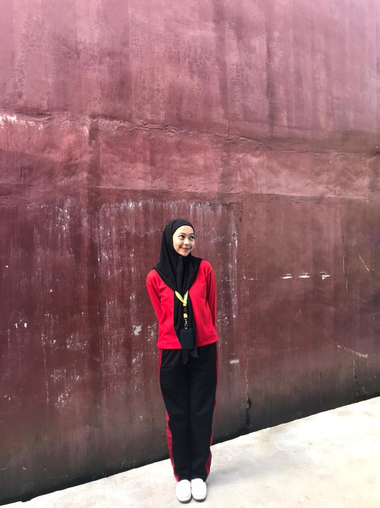
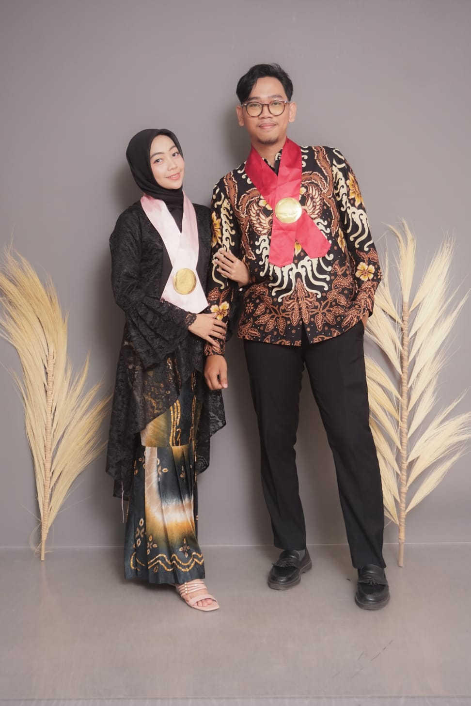
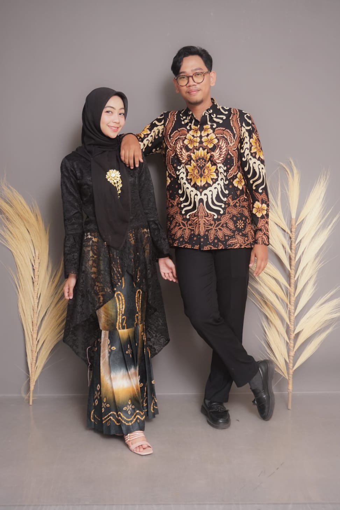
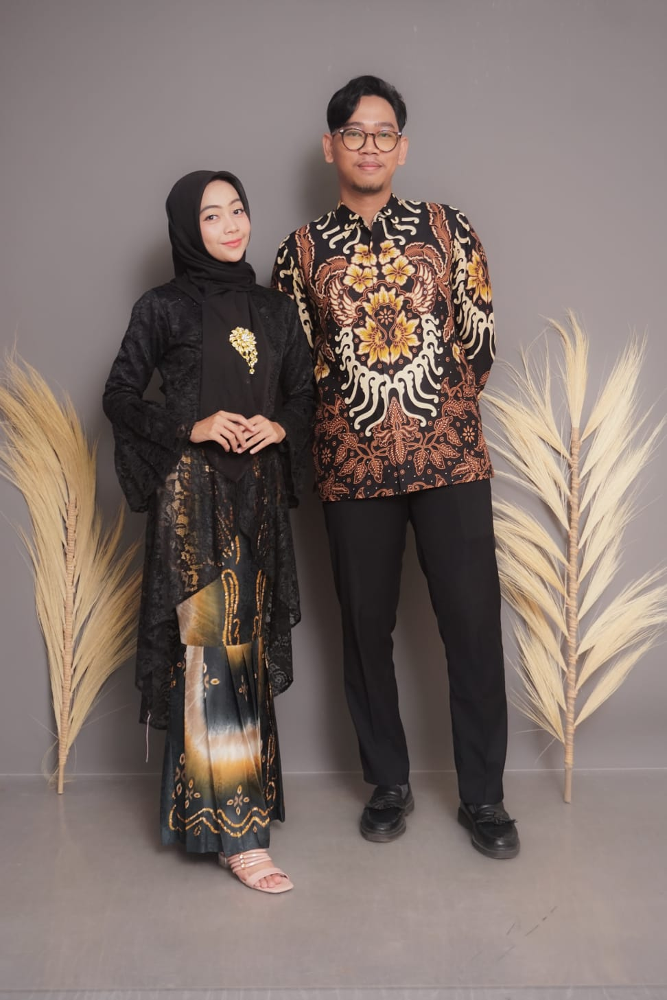

"Dan di antara tanda-tanda (kebesaran)-Nya ialah Dia menciptakan pasangan-pasangan untukmu dari jenismu sendiri, agar kamu cenderung dan merasa tenteram kepadanya, dan Dia menjadikan di antaramu rasa kasih dan sayang. Sungguh, pada yang demikian itu benar-benar terdapat tanda-tanda (kebesaran Allah) bagi kaum yang berpikir."
— (QS. Ar-Rum: 21)
Rafi Rahman Dika
Putra Pertama dari
Bapak Sudarman &
Ibu Hariyanti
&

Anjeli Mutiara
Putra Pertama dari
Bapak Rinenggo Wahyu Jatmiko &
Ibu Ratna Mutumanikam
Acara Akan
Diselenggarakan
00
HARI
00
JAM
00
MENIT
00
DETIK
Sabtu, 6 Juni 2026
Acara Berlangsung
Sabtu, 6 Juni 2026
🕒 pukul 07:30 WIB - 11:00 WIB
Masjid Agung Kubah Kecubung Darurrahman
Jl. RTA Milono, Langkai, Kec. Jekan Raya, Kota Palangka Raya, Kalimantan Tengah 74874
Potret Asmara


